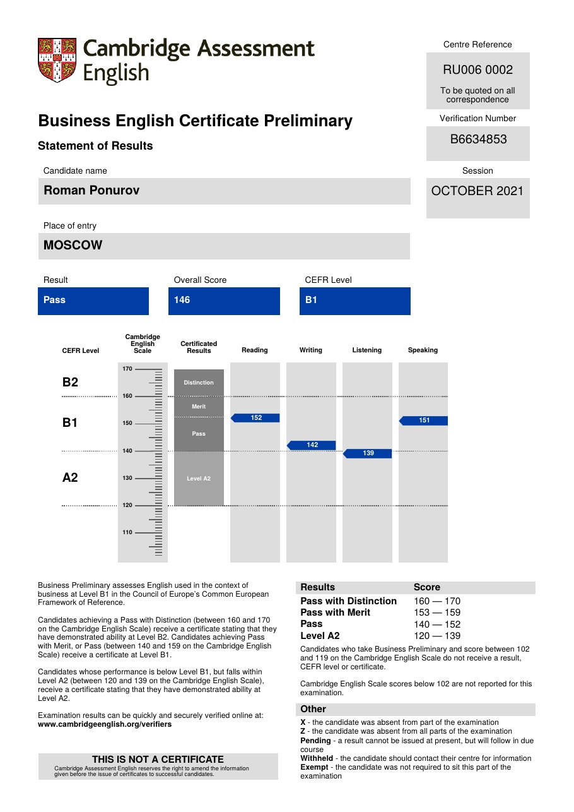
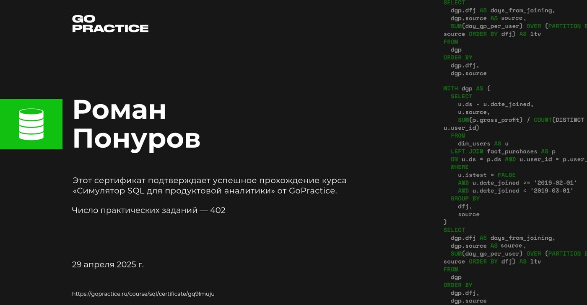
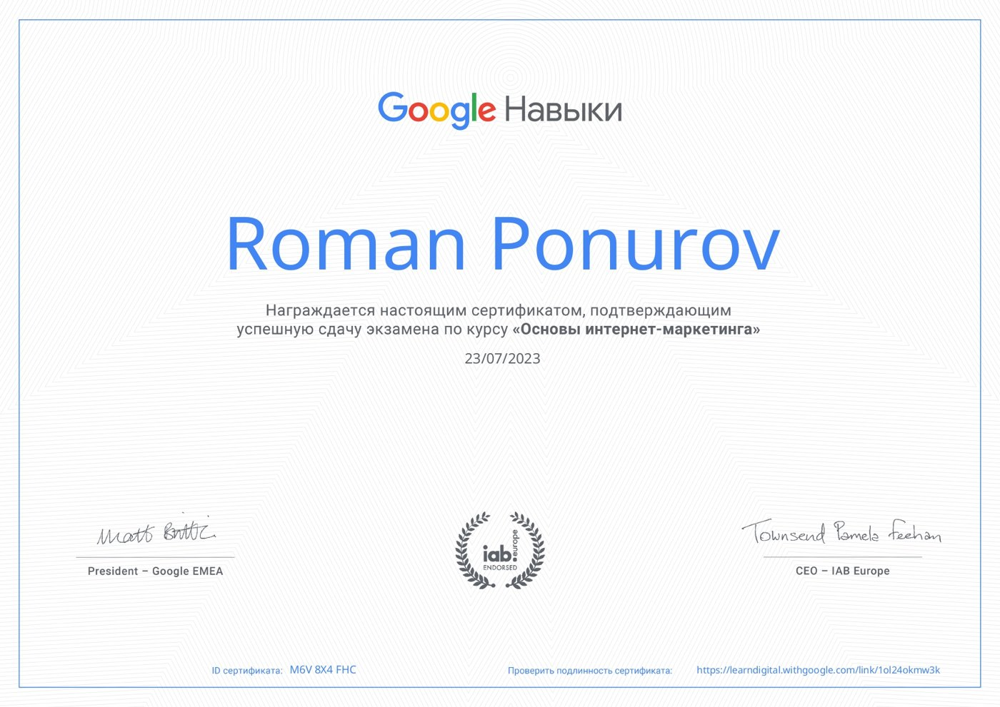
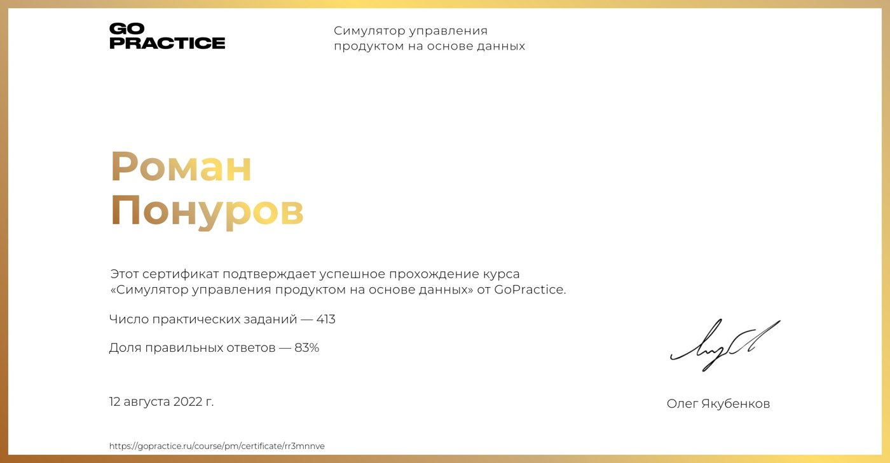

Education
Three universities — engineering, finance, management — and everything else I've studied: certificates, courses, an accelerator and an independent assessment.
Higher education
 RANEPA
RANEPA
Institute of Industry Management, Department of Theory and Systems of Industry Management. Dissertation: “Using artificial intelligence to improve a company's management system” — details on the research page.
 HSE University
HSE University
Faculty of Economic Sciences, “Corporate Finance” programme. Thesis: “Modelling and evaluating the efficiency of investment projects in a company's digital transformation” — how to tell in advance whether a digital transformation will pay off. More · slides, PDF
 MPEI
MPEI
Moscow Power Engineering Institute. The engineering foundation where it all started: testing and maintaining electrical equipment, then selling technical solutions.
Further learning
Certificates
- Scrum.org
certificateProfessional Scrum Product Owner I (PSPO I)Scrum product owner certificate: product value, backlog, stakeholder management. - Cambridge English · October 2021
certificateBusiness English Certificate Preliminary (BEC)Business English, level B1: exam passed (Pass), overall score 146 on the Cambridge English Scale. Reading 152, writing 142, listening 139, speaking 151.
Statement of results · verify
Independent assessment
- Assessty for MTS · April 2022
assessmentProduct manager competency assessmentMiddle grade. Strongest area: building new products under uncertainty. 17 topics scored 8–10 out of 10: value management, business model and monetisation, key metrics, hypotheses, UX testing, timelines, risks, grooming.
Courses
- ProductDo · 2025
courseTechnical knowledge for product managersArchitecture, APIs, databases and integrations — to speak the same language as engineers. - GoPractice · 2025
courseSQL simulator for product analyticsSQL queries for product metrics: funnels, cohorts, retention. 402 practical assignments; certificate dated 29 April 2025.
Certificate · verify - Pendo.io · 2024
courseAI for Product ManagementHow to apply AI in product management work and in the products themselves. A course by Pendo with Google Cloud and Mind the Product — completed.Course badge - Google · 2023
courseFundamentals of digital marketingAcquisition channels, search and contextual ads, web analytics. Exam passed on 23 July 2023; the programme is endorsed by IAB Europe.
Certificate · verify - GoPractice · 2022
courseData-driven product management simulatorProduct analytics and metrics on an end-to-end case: from hypothesis to a data-based decision. 413 practical assignments, 83% correct answers; certificate dated 12 August 2022.
Certificate · verify - HSE University · 2014
programmeTranslator in professional communicationProfessional English: translation and business communication.
Accelerators and competitions
- Moscow Innovation Cluster · June–September 2025
acceleratorAcademy of Innovators acceleratorCompleted the programme with my own product bolz.tech, an ecosystem of sharing services: packaging the idea, testing hypotheses, pitching to experts. - Moscow · July–August 2025
competitionMoscow Innovator 2025 competitionTook part with the same product, bolz.tech.